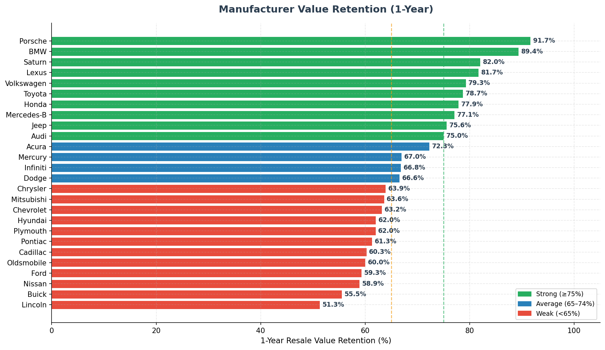
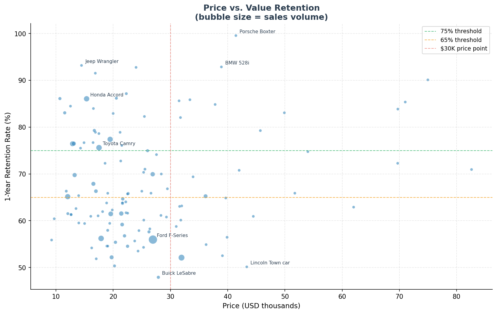
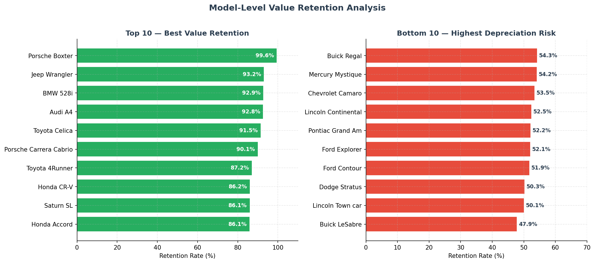
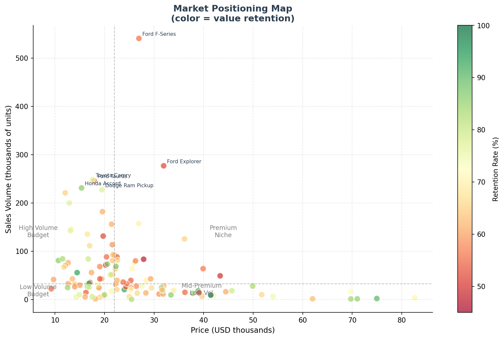
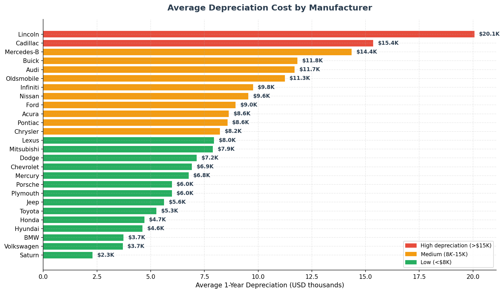

| Attribute | Detail |
|---|---|
| Models | 157 car models |
| Manufacturers | 30 brands |
| Variables | Price, 1-year resale value, sales volume, horsepower, fuel efficiency, engine size |
| Price range | $9.2K – $85.5K |
| Sales range | 100 – 540,600 units |
| Total market volume | ~8.3 million units |
Key metric — Retention Rate:
Retention Rate (%) = (1-Year Resale Value / Original Price) × 100
A 75% retention rate means a car loses 25% of its value in one year.

| Tier | Manufacturers | Avg Retention |
|---|---|---|
| Premium-hold | Porsche, BMW | ~90% |
| Reliable hold | Lexus, Toyota, Honda, VW | ~78–82% |
| Average | Jeep, Audi, Acura, Mercury | ~67–76% |
| High depreciation | Ford, Nissan, Buick, Lincoln | ~51–59% |


| Model | Price | Resale | Retention |
|---|---|---|---|
| Porsche Boxster | $41.4K | $41.2K | 99.6% |
| Jeep Wrangler | $14.5K | $13.5K | 93.2% |
| BMW 528i | $38.9K | $36.1K | 92.9% |
| Audi A4 | $24.0K | $22.3K | 92.8% |
| Toyota Celica | $16.9K | $15.4K | 91.5% |
| Porsche Carrera Cabrio | $75.0K | $67.5K | 90.1% |
| Toyota 4Runner | $22.3K | $19.4K | 87.2% |
| Honda CR-V | $20.6K | $17.7K | 86.2% |
| Saturn SL | $10.7K | $9.2K | 86.1% |
| Honda Accord | $15.3K | $13.2K | 86.1% |
| Model | Price | Resale | Retention | 1-yr Loss |
|---|---|---|---|---|
| Buick LeSabre | $27.9K | $13.4K | 47.9% | -$14.5K |
| Lincoln Town Car | $43.3K | $21.7K | 50.1% | -$21.6K |
| Dodge Stratus | $20.2K | $10.2K | 50.3% | -$10.0K |
| Ford Contour | $17.0K | $8.8K | 51.9% | -$8.2K |
| Ford Explorer | $31.9K | $16.6K | 52.1% | -$15.3K |

| Quadrant | Characteristics | Examples |
|---|---|---|
| High Volume / Budget | Mass-market, affordable, high retention | Honda Civic, Toyota Camry, Ford Focus |
| Premium Niche | High price, low volume, strong retention | Porsche, BMW, Lexus |
| Mid-Premium / Low Volume | High price, moderate volume, mixed retention | Lincoln, Cadillac |
| Budget / Low Volume | Niche economy, variable retention | Saturn, Plymouth |

| Tier | Manufacturers | Avg 1-yr Loss |
|---|---|---|
| High (>$15K) | Lincoln, Porsche, Jaguar, Cadillac | $15K–$22K |
| Medium ($8K–$15K) | BMW, Mercedes, Audi, Infiniti | $8K–$14K |
| Low (<$8K) | Saturn, Hyundai, Honda, Toyota | $2K–$6K |
| File | Description |
|---|---|
Car_sales_row_data.csv | Raw dataset |
analysis.py | Python analysis — generates all 5 charts |
Car_sales_analysis.xlsx | Excel workbook with full analysis |
charts/ | All generated chart images |
pip install matplotlib numpy pandas
python3 analysis.pyCharts are saved to the charts/ directory.